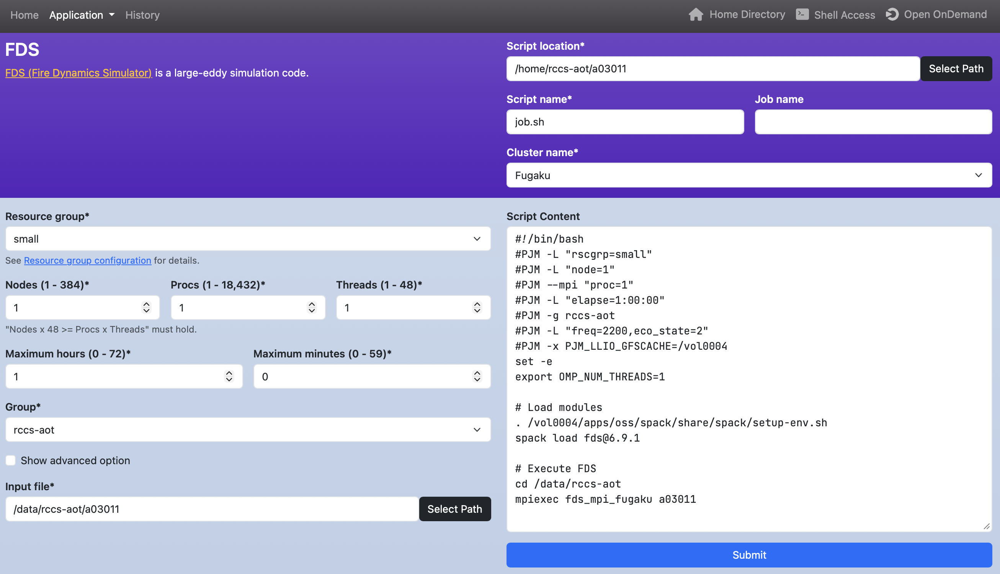
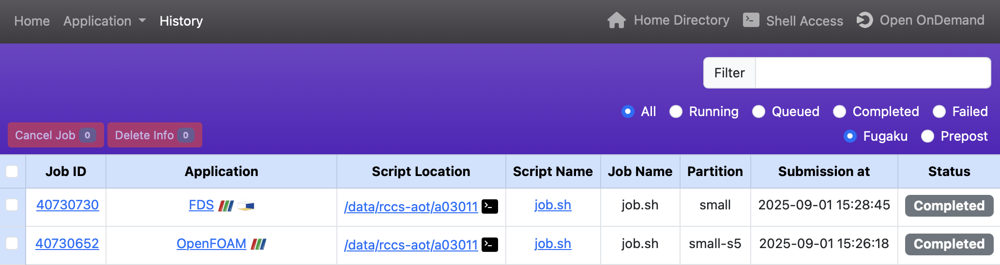

Open Composer User Manual
1. Introduction
Open Composer is a web application to submit batch jobs to an HPC cluster system from a web browser. Open Composer consists of "Home page", "Application page", and "History page".
2. Home Page
Displays application icons by category.
On the left side of the navigation bar are links to the "Home page", "Application page", and "History page".
On the right side of the navigation bar are links to the Open OnDemand "Home Directory", "Shell Access", and "Dashboard".
Note that "Shell Access" is only displayed if login_node is set in conf.yml.erb.
3. Application Page
Generates a job script. When you enter values in the web form on the left side of the page, a job script is dynamically generated in the text area on the right side of the page. The text area can be freely edited. When you click the "Submit" button below the text area, the generated job script is submitted to an HPC cluster system.
- The "Script location," "Script name," and "Job name" in the header section specify the "job script save directory," "job script file name," and "job name," respectively.
- The "Cluster name" in the header section is only displayed if multiple job schedulers are configured. The job script will be submitted using the selected job scheduler.
4. History Page
Displays the job history. You can check the execution status of jobs and stop currently running jobs.
- Enter text in the "Filter" box to the right of the header and press the Enter key to display only jobs whose text matches each element in the table.
- Click the "All," "Running," "Queued," "Completed," or "Failed" radio button on the right of the header to display only jobs corresponding to that status. The radio buttons below will only be displayed if multiple job schedulers are configured (The image shows "Fugaku" and "Prepost", but the display names will depend on the configuration). Click the radio button to display only jobs from the selected job scheduler.
- To cancel a running job or a queued job, check the leftmost check box of the job and click "Cancel Job" above the table.
- To delete a completed job information from the table, check the leftmost check box of the job and click "Delete Info" above the table.
- Click the "Job ID" link to view job details.
- Click the "Application" link to go to the application page. If there is an icon next to it, clicking that icon will open the corresponding Open OnDemand application page.
- Click the "Script Location" link will launch the Open OnDemand Home Directory application. If there is a terminal icon, clicking that icon will launch the Open OnDemand Terminal application.
- Click the "Script Name" link to go to the application page with the parameters used in the script loaded.